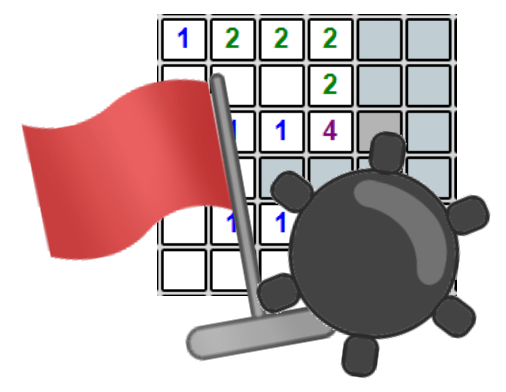
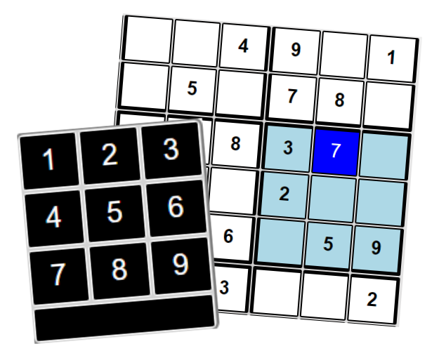
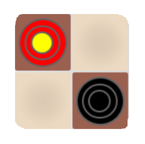

|  | Minesweeper | Play ► |
This was my first attempt at a game, and it was relatively easy to create. Behind the scenes is a 2-dimensional integer array that's updated as each mine is randomly placed. Clicking a square simply reveals what's in this array. Honestly, the hardest part was making the color wave that sweeps outward from the last clicked square when the game is won/lost. All icons and images were made by Colin Toth. | Lines of JavaScript: ~400 | How to Play |
|  | Sudoku | Play ► |
My second attempt at a game. This one was definitely more challenging to create than Minesweeper. I create the puzzle boards using a "backwards" approach: first developing a full solution board using backtracking -- then poking holes in it, checking if it's solvable, and repeating as needed. In my definition, "solvable" means a puzzle that can be solved using the "last-candidate" method and without guessing. Efficiency became a big concern in this process, and so the 'Hard' difficulty represents the least amount of numbers that can be given while ensuring the board will generate in a reasonable amount of time. | Lines of JavaScript: ~600 | How to Play |
|  | Checkers | Play ► |
This was the most challenging one to create but also the most rewarding. Checkers has a bunch of rules -- from valid moves, to compulsory jumps, kinging, and determining a winner -- that I had to enforce in the code, which took the most time. On the way, I was able to learn about 'drag' events and dynamic CSS stylesheets. The most interesting part came with making the computer player hard to beat. I implemented a variation of the min/max algorithm with alpha-beta pruning, which gave me the difficulty I desired. The 'Weak' player simply returns a random move, while the 'Strong' and 'Grandmaster' players look 3 and 7 moves ahead, respectively. | Lines of JavaScript: ~1300 | How to Play |
| Snake | Play ► |
The classic game of Snake. This one was straightforward to create. I represent the snake using a singly linked list, which is such a natural, called-for solution here. The linked list points to the snake's head, which points to the next body part, and so on until the tail. Why so many lines of code? Well, I experimented around with a lot of user options and Local Storage techniques. You'll notice that, after making changes and hitting 'Apply', your preferences will remain even after the page reloads. Another difficult, experimental feature I implemented was support for mobile device swiping. Have fun with this nostalgic but brutally unforgiving game! | Lines of JavaScript: ~600 | How to Play |